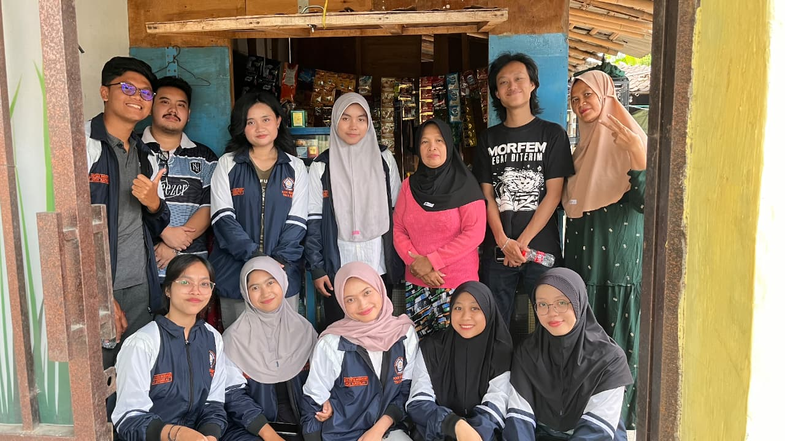
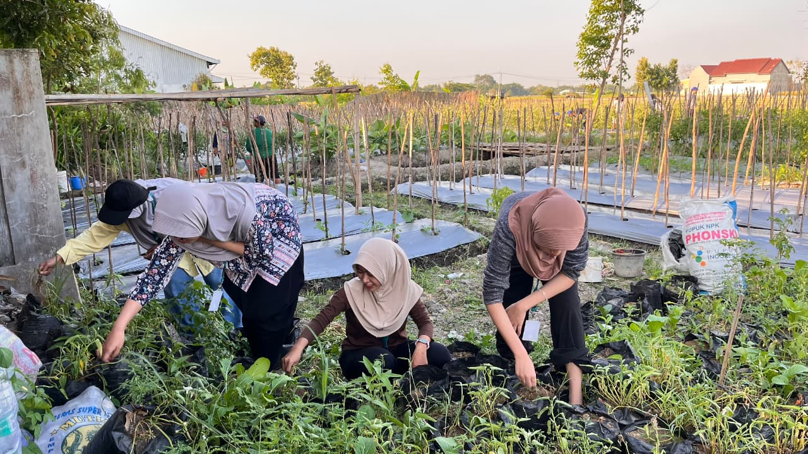
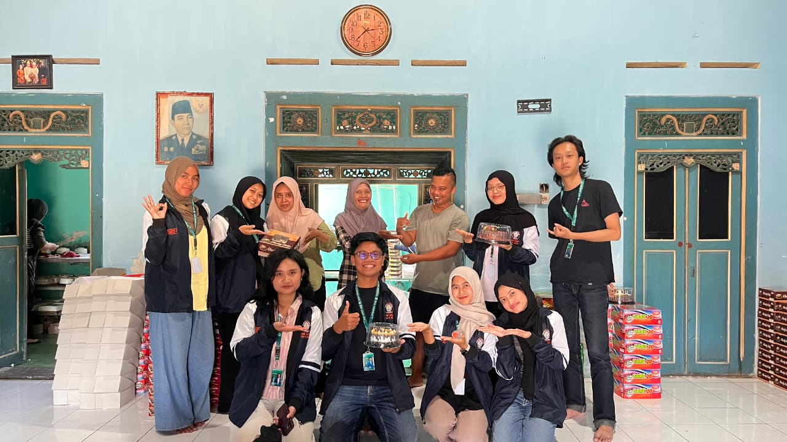
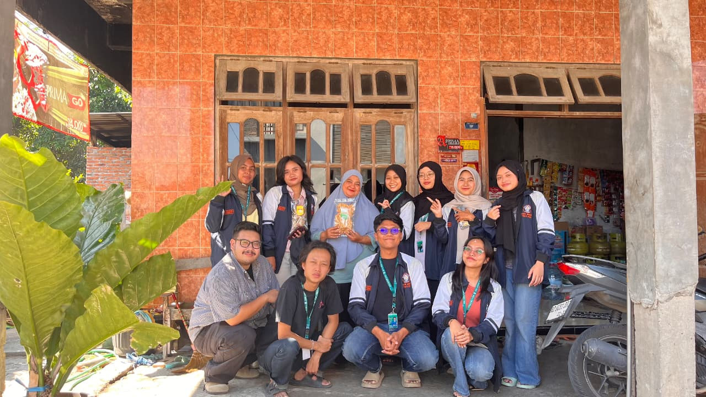

Berita Desa Sukorejo

Klaten, 30 Juli 2026 – Perkembangan teknologi informasi menuntut para pelaku Usaha Mikro, Kecil, dan Menengah (UMKM) untuk segera beradaptasi dengan sistem pemasaran modern. Menanggapi kebutuhan tersebut, mahasiswa Tim II KKN Universitas Diponegoro (Undip), Nisrina Iftinan Naila dari Program Studi Ekonomi Islam, menyelenggarakan program kerja sosial kemasyarakatan berupa pendampingan digital marketing dan pembuatan katalog produk digital di industri rumahan Tutu Snack, Desa Sukorejo, Kecamatan Wonosari, Kabupaten Klaten.
Inisiatif ini berakar dari hasil observasi lapangan yang menunjukkan bahwa sebagian besar pelaku usaha rumahan di Desa Sukorejo masih mengandalkan transaksi tatap muka dan metode pemasaran getok tular (mouth to mouth). Skema konvensional tersebut membuat perputaran pasar produk camilan Tutu Snack belum optimal menjangkau konsumen potensial di luar wilayah kecamatan maupun kabupaten, padahal kualitas rasa dan kapasitas produksinya sangat kompetitif.
Pendampingan dilaksanakan secara intensif melalui kunjungan ke rumah produksi Tutu Snack. Mahasiswa KKN memulai program dengan pemetaan lini produk unggulan, identifikasi segmentasi pembeli, hingga analisis kendala utama promosi daring. Bersama rekan-rekan tim KKN lain, Nisrina kemudian menggelar sesi dokumentasi visual terarah yang mencakup pemotretan produk dengan pencahayaan memadai serta perekaman video proses pembuatan camilan untuk kebutuhan materi video pendek di media sosial.
Seluruh materi visual dan informasi bisnis tersebut dihimpun secara terstruktur ke dalam format Katalog Produk Digital. Katalog ini memuat identitas merek (branding), hingga tautan langsung menuju kontak pemesanan cepat. Selain penyediaan aset visual, pemilik usaha juga dibekali edukasi mengenai tata cara pengelolaan konten promosi serta strategi distribusi katalog via media sosial agar dapat dijalankan secara mandiri dan berkelanjutan.
Melalui realisasi program kerja ini, Tutu Snack diharapkan mampu memiliki daya saing yang lebih tangguh di pasar daring, memperluas jaringan pelanggan secara berkelanjutan, dan menjadi representasi keberhasilan transformasi digital usaha lokal di Desa Sukorejo.


